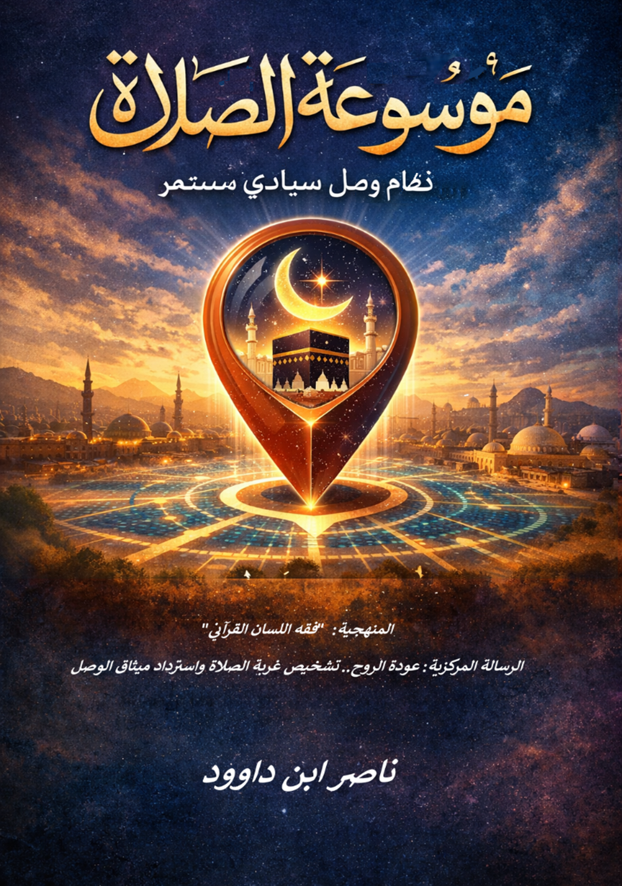

لمن هذه الموسوعة؟
- الباحثون في الدراسات القرآنية وفقه اللغة
- المهتمون بتجديد الفكر الإسلامي والمنهج الحضاري
- الدعاة والمفكرون الساعون لتحرير العبادة من الجمود
- طلاب العلم الشرعي الراغبون في التأصيل اللساني
- كل من يبحث عن استعادة سيادة النقل والعقل في فهم الصلاة
ملخص المقدمة
لماذا نحتاج إلى منهج تأصيلي جديد؟
تأتي هذه الموسوعة كاستجابة معرفية لضرورة ملحة تفرضها طبيعة اللحظة الحضارية الراهنة؛ وهي ضرورة العودة إلى "النبع القرآني الأول" ليس بوصفه نصاً تاريخياً يُستعاد بالذاكرة، بل بوصفه "نظام تشغيل وجودي" يحتاج إلى إعادة تفعيل بآليات منهجية منضبطة. إن "موسوعة الصلاة" في حلتها الجديدة ليست مجرد سرد للأحكام، بل هي إطار عمل يسعى لتحرير العبادة من "التدجين الطقسي" إلى "الإقامة السيادية".
الغاية المحورية.. استعادة سيادة النص
إن الهدف الأسمى لهذا العمل هو كسر حالة "الاغتراب المعرفي" بين المسلم وكتابه. لقد أدى التراكم التاريخي، رغم ثرائه، إلى تحويل القراءة التدبرية إلى "نقل حرفي" جمد المعاني في قوالب زمنية معينة. لذا، تسعى الموسوعة عبر "فقه اللسان القرآني" إلى استنطاق حيوية النص وإثراء الفهم الفقهي.
المنهجية.. فقه اللسان كأداة للتحرير المعرفي
تعتمد الموسوعة منهجاً "تأصيلياً لسانياً" يتجاوز المعاجم التقليدية ليتصل ببنية الكلمة القرآنية ذاتها، وذلك عبر: الشفرة البنيوية (الرسم العثماني)، الاشتقاق والجذر (صلو/وصل)، والنظم والسياق.
ضوابط الاستنباط.. السيادة لا تعني الفوضى
لكي لا يتحول التدبر إلى تأويل عبثي، وضعت الموسوعة حدوداً معرفية صارمة: ثبات الظاهر الفقهي، التدبر لا التأويل، والنسبية البشرية.
"عودة الروح".. من الأداء الميكانيكي إلى الإقامة السيادية
تشخص هذه المقدمة أزمة "غربة الصلاة"؛ حيث تحولت العبادة إلى واجب ثقيل يُؤدى لإبراء الذمة، بينما أرادها الخالق "طاقة سيادية" تمنح المؤمن توازنه. إن هدفنا هو الانتقال بالإنسان من طور "الحمأ المسنون" إلى طور "الصلصال الرنان".
خاتمة الموسوعة
تختتم هذه الموسوعة فصلاً محورياً من مسيرة البحث والتنقيب في كتاب الله، لتنتقل من كونها "مؤلَّفاً ناجزاً" إلى "بنية معرفية مفتوحة" تستوعب تدفق البصائر القرآنية. إن الجوهر الذي تسعى هذه الموسوعة لترسيخه يتجاوز استعراض الأحكام الفقهية، ليؤصل للصلاة (الصلوة) بوصفها "نظام وصل سيادي مستمر"، ومنظومة تشغيل تهدف إلى بناء الإنسان واسترداد ميثاق الخلافة الكونية.
التحول المنهجي الجوهري: الانتقال بالصلاة من حيز "الحدث الطقسي" الذي يُؤدى آلياً، إلى "منهج تأصيل شامل" يبدأ من ضبط اللسان وينتهي بالإنتاج الحضاري. إن هذه الموسوعة هي دعوة لاستعادة "النبع الأول"، وللانتقال من "غربة الصلاة" إلى "عمارة الأرض" بروح متصلة بمصدر النور.
أقسام الموسوعة الرئيسية
١. التحرير اللساني: من الطقس إلى نظام الوصل
تأصيل جذر (صلو/وصل) وكسر التراكم التاريخي
٢. هندسة الوعي: الوضوء كإعادة ضبط للإدراك
تطهير الحواس والارتقاء بالوعي السيادي
٣. سيادة الإقامة: من الأداء إلى البناء الداخلي
التمييز بين "إقامة الصلاة" ومجرد "الصلاة"
٤. الرسم العثماني: الشفرة البصرية للصلاة
دلالة كتابة "الصلوة" بالواو
٥. المختبر كمحراب: وحدة العبادة والعلم
تفكيك ثنائية العلمانية والدين
٦. الإنسان الصلصالي: من الطين إلى الرنين الحضاري
التحول من الحمأ المسنون إلى الصلصال الرنان
٧. التكبير: إعلان تحرير السيادة
رفع السلطات الزائفة وإثبات العبودية لله وحده
٨. السجود: ذوبان الأنا في سنن الكون
الخضوع للقوانين الإلهية سبيل النجاة
منهجية البحث
تعتمد الموسوعة على منهجية ثلاثية الأركان:
- البرهان النصي: الاستناد إلى النصوص القرآنية الصريحة في بناء مفهوم الصلاة
- البرهان التاريخي: تتبع تطور المفهوم في تراث الأمة الإسلامية
- البرهان اللساني: تحليل الجذر اللغوي والرسم العثماني والنظم السياقي